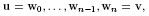
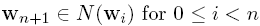
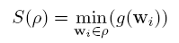
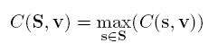

Purpose
Usage
Details
Inputs
Outputs
Parameters
Events&Interaction
Example
Tips&Tricks
Known
Bugs
FuzzyConnectedness
Purpose
Given an input image and an image with seed points, the FuzzyConnectedness module
calculates a map of connectivities from each voxel to the seed points,
as well as a label image in which each voxel is labeled according to
which seed point it is closest to in the fuzzy connectivity sense. Due
to the definition of fuzzy connectedness (see below), the implemented
algorithm is suited for segmenting or separating bright objects on a
dark background.
Usage
A 2D or 3D scalar gray-value image is attached to input0.
An image of the same size containing different seed regions,
labeled with integer number from 1 to 64, is attached to input1.
As shown in the example network, the SoView2DMarkerEditor can be used together with the MarkerToMask module to produce the seed region image. Set the Current Type value in SoView2DMarkerEditor to values between 1 and 63 to define different seed regions, and use the Marker Type option in the MarkerToMask module.
Details
This module implements the fuzzy connectedness algorithm published in:
Xavier Tizon and Örjan Smedby
Segmentation with gray-scale connectedness can separate arteries and veins in MRA
J. Magn. Reson. Imaging 2002; 15:438-445
As described in this paper the fuzzy connectedness to given seed regions are calculated.
A path  between between two voxels u,v is defined as a sequence of distinct voxels,
between between two voxels u,v is defined as a sequence of distinct voxels,

where each voxel in the path is a neighbor to the previous voxel in a
8-neighborhood or 26-neighborhood in 2D and 3D respectively:
.
The strength of path is the minimum of the intensity value of the traversed voxels:

where g(..) represent the voxel intensity. The fuzzy connectedness between a seed region and a
voxel is the maximum strength among all paths to from the region to the voxel:
.
A connectivity map is calculated for each seed region, and the output
connectivity map is the maximum connectivity over all seed regions. The
label map
indicates to which seed region each voxel belongs.
Due to the definition of the connectedness and due to the concurrent
approach, seed points with higher intensity will overweight those
with lower intensities.
Inputs
Input0
must
be a scalar volume.
Input1
is a mask of the different seed regions. The seed regions can be
represented by integer values from 1 to 63. Values > 63 in the
mask will be treated as barriers and the propagation will stop from
each side.
Outputs
Output0
is the concurrent connectivity map. Output1
is the label map.
Parameters
None
Events &
Interaction
None
Example
See example network.
Tips & Tricks
- This module does not support paging. Therefore the complete image has to be stored.
- Seed voxels with high intensities will outweight seed voxels with low intensities.
Known Bugs
None